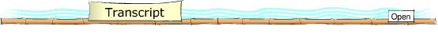

This section provides you with the key language needed to talk about leisure and entertainment.
The key
language is relevant to the whole unit.
 新年好xīnnián hǎo 新年好xīnnián hǎo | happy new year |
| 你们玩得开心吗？Nǐmen wán de kāixīn ma? | Did you have a good time? |
| 非常精彩fēicháng jīngcǎi | wonderful |
| 尤其喜欢相声和小品yóuqí xǐhuān xiàngsheng hé xiǎopǐn | especially like comic dialogues and short plays |
| 真叫人羡慕zhēn jiào rén xiànmu | really enviable |
| 你是怎么过的？Nǐ shì zěnme guò de? | How did you celebrate it? |
| 春节是中国人的传统节日Chūnjié shì Zhōngguó rén de chuántǒng jiérì. | Spring Festival is Chinese people's traditional festival. |
| 大年三十dànián sānshí | the last day of a year by lunar calender |
| 大年初一dànián chūyī | the first day of a year by lunar calender |
| 顾名思义gùmíngsīyì | it is self evident |
| 赏月，吃月饼shǎng yuè, chī yuèbǐng | appreciate the moon and eat moon-cakes |
| 没错méicuò | correct |

Vocabulary for talking about going out.
| 新年 | new year |
| 新年好 | happy new year |
| 过 | to celebrate |
| 跟 | to follow, with |
| 父母 | parents |
| 一起 | together |
| 玩 | to play, to spend time |
| 开心 | happy |
| 大年三十 | the last day of a lunar year |
| 年夜饭 | New Year's Eve dinner |
| 中央 | centre |
| 中央台 | Central Television |
| 春节 | Spring Festival |
| 联欢晚会 | gala |
| 非常 | very |
| 精彩 | wonderful |
| 尤其 | especially |
| 相声 | cross-talk |
| 小品 | short play |
| 旅游 | to travel |
| 大年初一 | the first day of a lunar year |
| 看望 | to visit |
| 家人 | family member |
| 香港 | Hong Kong |
| 气氛 | atmosphere |
| 浓 | thick |
| 没错 | correct |
| 舞龙 | dragon dance |
| 舞狮 | lion dance |
| 表演 | performance |
| 到处 | everywhere |
| 喜气洋洋 | festival-like |
| 不错 | good |
| 羡慕 | to envy |
| 实验室 | lab |
| 周末 | weekend |
| 包 | bag, to wrap |
| 包饺子 | to make dumplings |

| 小李 ： | 小王，新年好！  |
| 小王 ： | 小李，新年好！ |
| 小李 ： | 你这个新年是怎么过的？  |
| 小王 ： | 啊，我回了家，跟我父母一起过的。 |
| 小李 ： | 你们玩得开心吗？ |
| 小王 ： | 嗯，很开心。大年三十的晚上，我们一起在家吃了年夜饭后，看了中央台的春节联欢晚会。 |
| 小李 ： | 晚会怎么样？ |
| 小王 ： | 非常精彩，我尤其喜欢相声和小品。 |
| 小李 ： | 你们去哪里旅游了吗？ |
| 小王 ： | 去了，我们大年初一看望了一些家人后，大年初二就一起去了香港旅游。 |
| 小李 ： | 在香港，春节的气氛也很浓吧？ |
| 小王 ： | 是的，没错，很多地方都有舞龙舞狮表演，到处都喜气洋洋。 |
| 小李 ： | 真不错，真叫人羡慕。 |
| 小王 ： | 怎么？你是怎么过的？ |
| 小李 ： | 唉，我工作太多，我是一个人在实验室里过的。 |
| 小王 ： | 哦……这样吧，这个周末你来我家，我们一起包饺子，怎么样？ |
| 小李 ： | 好啊，太棒了。 |
| Xiǎo Lǐ: | Xiǎo Wáng, xīnnián hǎo. |
| Xiǎo Wáng: | Xiǎo Lǐ, xīnnián hǎo. |
| Xiǎo Lǐ: | Nǐ zhè gè xīnnián shì zěnme guò de? |
| Xiǎo Wáng: | Ā, wǒ huí le jiā, gēn wǒ fùmǔ yīqǐ guò de. |
| Xiǎo Lǐ: | Nǐmen wán de kāixīn ma? |
| Xiǎo Wáng: | Ēn, hěn kāixīn. Dànián sānshí de wǎnshàng, wǒmen yīqǐ zài jiā chī le niányèfàn hòu, kàn le zhōngyāngtái de chūnjié liánhuān wǎnhuì. |
| Xiǎo Lǐ: | Wǎnhuì zěnmeyàng? |
| Xiǎo Wáng: | Fēicháng jīngcǎi, wǒ yóuqí xǐhuān xiàngsheng hé xiǎopǐn. |
| Xiǎo Lǐ: | Nǐmen qù nǎlǐ lǚyóu le ma? |
| Xiǎo Wáng: | Qù le, wǒmen dànián chūyī kànwàng le yīxiē jiārén hòu, dànián chūèr jiù yīqǐ qù le xiānggǎng lǚyóu. |
| Xiǎo Lǐ: | Zài xiānggǎng, chūnjié de qìfen yě hěn nóng ba? |
| Xiǎo Wáng: | Shìde, méicuò, hěnduō dìfang dōu yǒu wǔlóng wǔshī biǎoyǎn, dàochù dōu xǐqìyángyáng. |
| Xiǎo Lǐ: | Zhēn bùcuò, zhēn jiào rén xiànmu. |
| Xiǎo Wáng: | Zěnme? Nǐ shì zěnme guò de? |
| Xiǎo Lǐ: | Āi, wǒ gōngzuò tài duō, wǒ shì yī gè rén zài shíyànshì lǐ guò de. |
| Xiǎo Wáng: | Ō ... zhèyàng ba, zhè gè zhōumò nǐ lái wǒ jiā, wǒmen yīqǐ bāo jiǎozi, zěnmeyàng? |
| Xiǎo Lǐ: | Hǎo a , tài bàng le. |

| Li: | Happy new year, Wang! |
| Wang: | Happy new year, Li! |
| Li: | How did you celebrate this Spring Festival? |
| Wang: | Oh, I went back home, and celebrated it together with my parents. |
| Li: | Did you have a good time? |
| Wang: | Yes, indeed. On the New Year's Eve, we watched the Spring Festival Gala on China Central Televion (CCTV) after we had New Year's Eve Dinner together. |
| Li: | How was the gala? |
| Wang: | Wonderful, I especially enjoyed the comic dialogues and short plays. |
| Li: | Did you go anywhere to travel? |
| Wang: | Yes, after we visited some family members on the first day, we travelled to Hong Kong on the second day. |
| Li: | At Hong Kong, the atmosphere of the Spring Festival is also quite a lot, isn't it? |
| Wang: | Yes, true, there were dragon-dancing and lion-dancing at many places, everywhere was festival. |
| Li: | Quite good, envious. |
| Wang: | Why? How did you celebrate it? |
| Li: | Oh, I had too much work, and celebrated it all by myself in the lab. |
| Wang: | Oh, well, you come to my place this weekend, we make some dumplings together, shall we? |
| Li: | OK, that's great. |